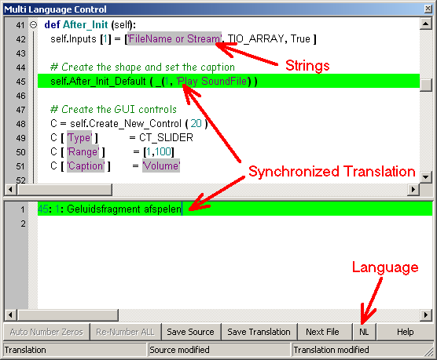

October 2008
Translation Tool
With the Translation tool it's easy to make a translation of the strings in one or more files, and also to test the original files for strings and see if these strings are made multi-lingual.
